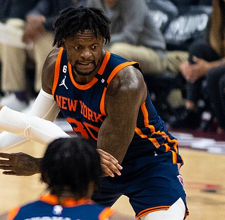
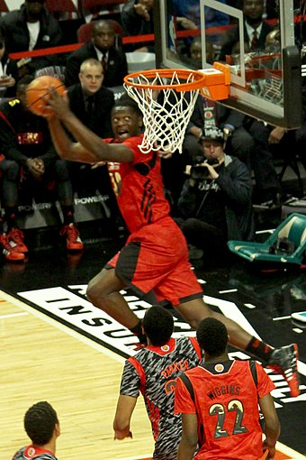
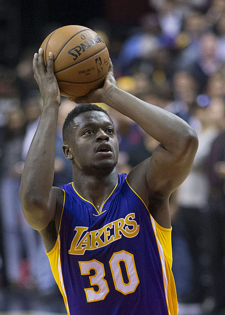

Julius Randle
Julius Deion Randle (born November 29, 1994) is an American professional basketball player for the New York Knicks of the National Basketball Association (NBA). A three-time NBA All-Star and a two-time member of the All-NBA Team, he was awarded the NBA Most Improved Player Award in 2021.
In his only season of college basketball with the Kentucky Wildcats, Randle was named a third-team All-American. He was drafted by the Los Angeles Lakers in the first round of the 2014 NBA draft with the seventh overall pick. In his regular season debut, Randle broke his right leg and missed the remainder of his rookie season. After four years with the Lakers, he signed with the New Orleans Pelicans before joining the Knicks after one season.
High school career
Randle attended Prestonwood Christian Academy in Plano, Texas, where he was widely regarded as a top 5 player in the class of 2013 with Andrew Wiggins, Jabari Parker, Andrew Harrison, and Aaron Gordon.[1][2][3]
In August 2012, Randle won the Under Armour Elite 24 dunk Contest[4] and the next day he was named one of the MVPs of the Elite 24 game, where he scored 27 points and led his team to a 164–138 victory.[5]
Considered a five-star recruit by Rivals.com, Randle was listed as the No. 1 power forward and the No. 2 player in the nation in 2013.[6]
The weekend after Thanksgiving in his senior season, Randle fractured his foot playing in a tournament and missed three months as a result. In March 2013, Randle returned for the TAPPS 5A playoffs and led his team to its third state title in four years.[7] As a senior in 2012–13, Randle averaged 32.5 points and 22.5 rebounds per game.[8]
On March 20, 2013, Randle committed to Kentucky, choosing it over Texas, Kansas and Florida. He then joined twin brothers Andrew and Aaron Harrison, James Young, Dakari Johnson and Marcus Lee as the sixth incoming Kentucky player selected to play in the 2013 McDonald's All-American Boys Game, as well as the 2013 Jordan Brand Classic.
College career
On February 28, 2014, Randle was named one of the 10 semi-finalists for the Naismith College Player of the Year.[9] He went on to help Kentucky reach the national championship game, which they lost to the University of Connecticut. He ended the 2013–14 season with 24 double-doubles, the second most double-doubles by a UK player in school history, behind Dan Issel's 25 in 1969–70, and the most double-doubles by a UK freshman (the previous record was shared by DeMarcus Cousins and Anthony Davis at 20). In 40 games (all starts), he averaged 15.0 points, 10.4 rebounds and 1.4 assists in 30.8 minutes per game.[10]
On April 22, 2014, Randle declared for the NBA draft, foregoing his final three years of college eligibility.[11]
Professional career
Los Angeles Lakers (2014-2018)
Randle was selected with the seventh overall pick in the 2014 NBA draft by the Los Angeles Lakers.[12] On October 28, 2014, after only 14 minutes of official NBA playing time, Randle broke his right tibia during the Lakers' 2014–15 season opener against the Houston Rockets.[13] He underwent successful surgery the following day to repair the fracture,[14] and subsequently missed the rest of the season. On March 9, 2015, he was cleared to participate in full weight-bearing, non-contact basketball activities.[15]
Randle returned to action in July 2015 with the Lakers' Summer League team.[16] Exactly a year after injuring himself in his NBA debut, Randle had 15 points and 11 rebounds as a starter in a 112–111 season-opening loss to the Minnesota Timberwolves.[17] On December 2, he recorded 15 points and a then career-high 19 rebounds in a 108–104 win over the Washington Wizards.[18] On January 29, 2016, he scored a career-high 23 points in a loss to the Los Angeles Clippers.[19] He matched that mark on March 8, recording 23 points and 11 rebounds in a 107–98 win over the Orlando Magic.[20] On March 25, he recorded his first career triple-double with 13 points, 18 rebounds and a then career-high 10 assists in a 116–105 loss to the Denver Nuggets. At 21 years old, he became the youngest Lakers player with a triple-double since Magic Johnson.[21] Six days later, he hit a game winning hook shot in the paint with 1.9 seconds left in overtime to lift the Lakers to a 102–100 win over the Miami Heat.[22] On April 6, he set a career high with 20 rebounds in a 91–81 loss to the Clippers.[23]
He appeared in all 15 games to begin the 2016–17 season before missing three straight in late November because of a hip injury.[24] On November 30, 2016, he had 13 points and matched a career-high with 20 rebounds in a 96–90 win over the Chicago Bulls.[25] On March 15, 2017, he scored a career-high 32 points in a 139–100 loss to the Houston Rockets.[26]
Randle began 2017–18 as a reserve, while Larry Nance Jr. started at power forward. He excelled as a backup center when the team went to a small lineup, and he returned to the starting lineup on December 29, 2017.[27] On December 31, Randle set season highs with 29 points and 15 rebounds in a 148–142 double overtime loss to the Houston Rockets.[28] On March 11, 2018, he had a career-high 36 points, 14 rebounds and seven assists in a 127–113 win over the Cleveland Cavaliers.[29] Randle finished the season as the only Laker to appear in all 82 games. As a starter, he averaged 18.6 points, 9.1 rebounds and 3.1 assists. He became a restricted free agent after the season.[27]
New Orleans Pelicans (2018–2019)
On July 2, 2018, the Lakers renounced their rights to Randle, making him an unrestricted free agent.[30] On July 9, Randle signed a two-year, $18 million contract with the New Orleans Pelicans.[31][32]
In his debut for the Pelicans in their season opener on October 17, Randle had 25 points off the bench in a 131–112 win over the Houston Rockets.[33] On November 19, he recorded his sixth career triple-double with 21 points, 14 rebounds and 10 assists in 25 minutes in a 140–126 win over the San Antonio Spurs.[34] On December 3, he scored a then career-high 37 points in a 129–126 loss to the Los Angeles Clippers.[35] Two days later, he had 27 points and 18 rebounds in a 132–106 win over the Dallas Mavericks.[36] On February 27, 2019, he scored 35 points in a 125–119 loss to the Lakers.[37] On March 15, he scored a career-high 45 points in a 122–110 loss to the Portland Trail Blazers.[38] He declined his second-year player option on June 16, 2019, and became a free agent.[39]
New York Knicks (2019–present)
On July 9, 2019, Randle signed a three-year, $63 million contract with the New York Knicks.[40]
On February 16, 2021, Randle scored 44 points and logged a then career-high seven 3-pointers in a 123–112 win over the Atlanta Hawks.[41][42] On February 23, Randle was named as a reserve for the 2021 NBA All-Star Game.[43] On April 16, Randle tied his season high 44 points, while also recording 10 rebounds and 7 assists, to lead the Knicks to a 117–109 victory over the Dallas Mavericks.[44] After the end of the regular season, Randle was named the NBA Most Improved Player, receiving 98 of 100 first place votes.[45] He was also named to the All-NBA Second Team as a forward.[46] Randle struggled in the playoffs shooting 29 percent from the field, while the Knicks were beaten by the Atlanta Hawks in five games in the first round of the 2021 NBA playoffs, which was seen as a disappointment and Randle received flack from many analysts and fans.[47][48]
After Randle's breakthrough season, the Knicks extended his contract on August 27, 2021, with a four-year, $117 million extension.[49][50] On March 7, 2022, Randle put up a then career-high 46 points on a career-high eight three-pointers made in a 131–115 win over the Sacramento Kings.[51] On March 22, Randle was fined $40,000 by the NBA for an incident with a game official, which occurred two days earlier during a 108–93 loss to the Utah Jazz.[52] On April 2, Knicks head coach Tom Thibodeau said that Randle would "likely" be out for the remainder of the season with a quad injury.[53] Randle's season was seen by many analysts and fans as a disappointment, especially after his prior playoff disappointment .[54]
On December 28, 2022, Randle recorded 41 points, 11 rebounds and 7 assists in a 122–115 loss against the San Antonio Spurs.[55] On January 15, 2023, Randle put up 42 points and 15 rebounds in a 117–104 win over the Detroit Pistons. He also became the first player in Knicks history to put up at least 40 points and 15 rebounds in a game since Patrick Ewing in 1996.[56] On February 2, 2023, Randle was named to his second NBA All-Star Game as a reserve for the Eastern Conference.[57] On February 24, Randle tied a then career-high 46 points in a 115–109 win over the Washington Wizards.[58] On March 3, Randle scored 43 points, grabbed nine rebounds and made a game-winning three-pointer in a 122–120 win over the Miami Heat.[59] On March 20, in a 140–134 loss to the Minnesota Timberwolves, Randle scored a career-high 57 points, going 19-of-29 from the field. His 57 points were the most by a Knick in a game since Carmelo Anthony's franchise-record 62 points in 2014.[60] On March 30, the Knicks announced that Randle would be out for at least two weeks with a left ankle sprain, which he suffered during a game the day earlier against the Miami Heat.[61] Randle had an up and down playoff showing struggling with his shot but still being able to contribute to his team & help get them to the Eastern Conference Semifinals. Coming back from injury in Game 1 of the 1st Round vs the Cleveland Cavaliers, Randle had a strong showing scoring 19 points to go along with 10 rebounds, 4 assists & 2 steals in a win on the road. Randle also re-injured his ankle in Game 5 of the 1st Round. He missed Game 1 of the Eastern Conference Semifinals but played in Game 2, scoring 25 points, grabbing 12 rebounds, & dishing out 8 assists in a win to tie the series.[47][62]
On February 1, 2024, Randle was named to his third All-Star Game as an Eastern Conference reserve.[63]
National team career
In the 2016 off-season, Randle joined the US Select Team that practiced against the United States men's national team ahead of the 2016 Summer Olympics.[64]